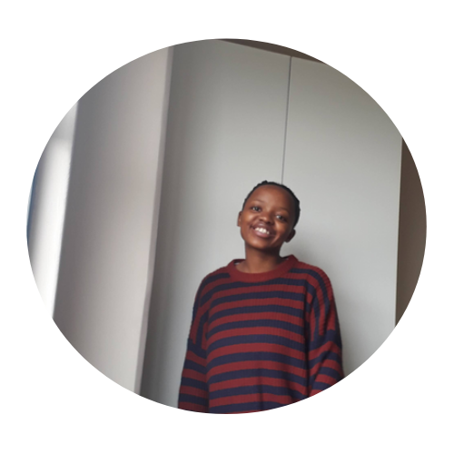

Hello, I'm
Princess-Khosi
Test Automation Engineer


Hello, I'm
Test Automation Engineer
Get To Know More

2+ years
Frontend Development
National Diploma
Systems Development
I began my systems development journey as a complete beginner, with no prior experience in writing code. Over time, I immersed myself in a variety of projects, from creating simple programs to developing full-fledged applications like RobotWorld and social expense tracker apps. Along the way, I gained hands-on experience in back-end development with Java and SQLite, building web APIs with Javalin, and testing with frameworks like NUnit. My work has also included containerized applications using Docker and leveraging tools like RestSharp for API testing. Each step of this journey has deepened my understanding of systems design, database management, and software testing, while fostering my ability to collaborate, learn quickly, and adapt to new technologies.